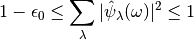
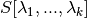
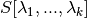
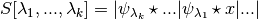

User Guide¶
Introduction to scattering transform¶
A Scattering Transform is a non-linear operator that builds invariant with respect to euclidean geometric transformations such as translations rotations or change of scale.
A Scattering Network is a complex valued Convolutional Neural Network using predefined wavelets filters and the complex modulus as non-linearity. A wavelet transform propagates a signal throuh each layer, in order to separate structures at different scales. Each operator ofthe cascade is non expansive, and so is the cascade. Thus higher order layers do not sufferfrom high variance. In other words, this representation has mathematical foundations that makes it amenable as a mainstream representation on structured signals such as natural images, textures, audio sounds or molecules.
Let us consider a set of wavelets  adjusted such that
there exists
adjusted such that
there exists  satisfying:
satisfying:

For a fixed  and a family of
and a family of  , a Scattering
coefficient  of order is such that:
, a Scattering
coefficient  of order is such that:

See [Mal12] for deeper mathematical insights on the Scattering Transform.
Practical implementation¶
Former implementation of the Scattering Transform computed each Scattering coefficients layer per layer. Here, we visit the tree of the Scattering path node per node. It permits to limit the memory use, and thus benefiting from CUDA accelerations. This is explained on REFERENE_FIGURE.

More details about our implementation can be found in SECTION_DU_DEV
1-D¶
2-D¶
The 2D implementation in this package provided outputs coefficients which matches exactly the one described in [AndenSM+14].
3-D¶
Output size¶
1-D¶
2-D¶
Let us assume that  is a tensor of size
is a tensor of size  . Then, if the
output
. Then, if the
output  via a Scattering Transform with scale
via a Scattering Transform with scale  and
and  angles will have
size:
angles will have
size:

3-D¶
Switching devices: cuda>cpu or cuda<cpu¶
By default, the Scattering Transform is run on CPU:
import torch
from scattering import Scattering2D
scattering = Scattering2D(32, 32, 2)
x = torch.randn(1, 1, 32, 32)
Sx = scattering(x)
However, if a GPU combined with CUDA is available, then it is possible to run it on GPU via:
scattering.cuda()
x = x.cuda()
Sx_ = scattering(x)
print(torch.norm(Sx_-Sx)
Then, it is possible to redo the computations on CPU via:
scattering.cpu()
x = x.cpu()
Sx = scattering(x)
print(torch.norm(Sx_-Sx)
Backend¶
This package is maintained with a flexible backend that currently supports PyTorch. A backend corresponds to an implementation of routines, which are optimized for their final purpose. For instance, torch backend is slightly slower than others backend but it has the advantage to be differentiable.
At installation time, a config files is created in ~/.config/scattering/config.cfg that will contain a backend used by default. This default backend will be overwritten if a global environment variable SCATTERING_BACKEND is created and not equal to None and in this case, each backends will use SCATTERING_BACKEND as a default backend. It is possible to specify more precisely the backend that will be used for each signal type as we will see below.
1-D backend¶
2-D backend¶
If the global environment variable SCATTERING_BACKEND_2D is not equal to None, then its value will be used at running time as the backend. Currently, two backends exist:
- torch: the scattering is differentiable w.r.t. its parameters, however it can be too slow to be amenable for large scale classification.
- skcuda: the scattering is not differentiable but is optimized to deliver fast computations.
3-D backend¶
Benchmark with previous versions¶
1-D backend¶
2-D backend¶
We compared our implementation with MATLAB version [OM15] and PyScatWave former
PyTorch implementation [OZH+18]. The following table correspond to the average compute time
for a batch of size  , for a forward pass:
, for a forward pass:
| Name | Average time(s) per batch |
|---|---|
| MATLAB [OM15] | >200 |
| Kymatio (torch backend, CPU) | 110 |
| Kymatio (torch backend, 1080Ti GPU) | 4.4 |
| Kymatio (torch backend, V100 GPU) | 2.9 |
| PyScatWave [OZH+18] | 1.6 |
| Kymatio (skcuda backend, 1080Ti GPU) | 1.1 |
| Kymatio (skcuda backend, V100 GPU) | 0.49 |
The CPU tests were performed on a 48-core machine.
3-D backend¶
References
| [AndenSM+14] | J Andén, L Sifre, S Mallat, M Kapoko, V Lostanlen, and E Oyallon. Scatnet. Computer Software. Available: http://www. di. ens. fr/data/software/scatnet, 2014. |
| [Mal12] | Stéphane Mallat. Group invariant scattering. Communications on Pure and Applied Mathematics, 65(10):1331–1398, 2012. |
| [OZH+18] | (1, 2) E. Oyallon, S. Zagoruyko, G. Huang, N. Komodakis, S. Lacoste-Julien, M. B. Blaschko, and E. Belilovsky. Scattering networks for hybrid representation learning. IEEE Transactions on Pattern Analysis and Machine Intelligence, ():1–1, 2018. doi:10.1109/TPAMI.2018.2855738. |
| [OM15] | (1, 2) Edouard Oyallon and Stephane Mallat. Deep roto-translation scattering for object classification. In The IEEE Conference on Computer Vision and Pattern Recognition (CVPR). June 2015. |